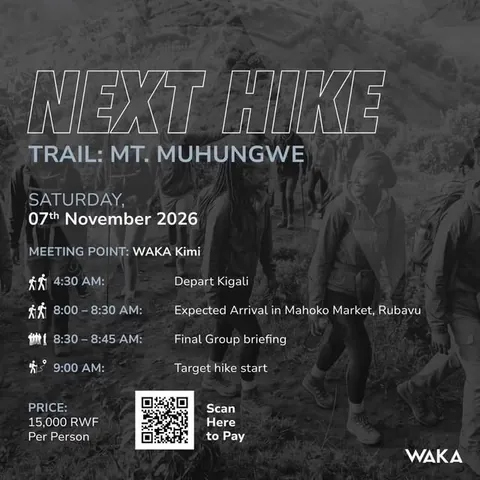
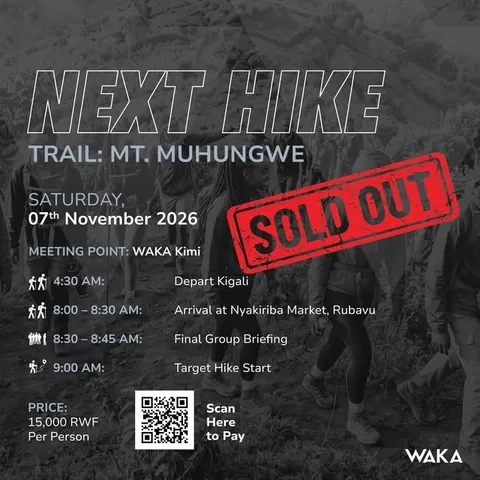

Essentials
Water
At least 1.5 litres per person. It gets hot on the ridge and there is nothing to buy at the top.

WAKA Hikes
Every few weeks we leave Kigali at 04:30, drive west or north, and walk. Fifteen thousand shillings, a bus full of strangers, and home before dinner.

How it works
No experience needed, no equipment beyond shoes and a layer. You turn up at WAKA Kimihurura in the dark, get on a bus, and by nine in the morning you are walking a ridge you have never seen.
04:30
Depart Kigali — WAKA Kimihurura
08:00
Arrival at the trailhead and market stop
08:30
Final group briefing
09:00
Target hike start
15,000
RWF per person — online or at the club
01
What to bring
Essentials
At least 1.5 litres per person. It gets hot on the ridge and there is nothing to buy at the top.
Essentials
Trainers with grip, or hiking shoes. Much of the route is easy, but the descents can be loose.
Weather
Mornings at 04:30 are cold and the hills make their own weather. A light waterproof jacket earns its place.
Practical
For the market stop, snacks and anything you forgot. Small notes are the most useful.
Practical
Hat, sunglasses and sunscreen. The Rwandan sun is unforgiving once you are above the tree line.
Optional
The views are the point. Bring something that will survive dust, or nothing at all.
Questions
Hikes are 15,000 RWF per person. That covers the round trip from Kigali, the guided route and the group briefing. Pay online by scanning the QR code on the event listing, or at the club in person.
Buses leave WAKA Kimihurura at 04:30. Groups typically arrive at the trailhead around 08:00, hold a final briefing at 08:30, and start hiking at 09:00. You are back in Kigali the same afternoon.
Most WAKA hikes are beginner-friendly and suited to any fitness level, including routes like Mount Kigali — roughly 7 km of walking with a moderate climb. Longer mountain days such as Mount Muhungwe are harder and usually run as a full day.
Trainers or hiking shoes, a light waterproof layer, at least 1.5 litres of water, sun protection and a hat. Bring cash for snacks and the market stop. The bus carries the group's bags, so you only carry what you need on the trail.
No. Hikes are open to anyone and sell out quickly. Members get the announcement first and priority on places.
Routes across Rwanda — Mount Kigali and the surrounding hills, Mount Muhungwe in Rubavu in the west, and other ridgelines announced through the season.

Next departure
Mt. Muhungwe in Rubavu departed on 7 November and sold out. The next dates are announced on Instagram first.